Bisection Method
它可以用來找到連續函數的其中一個根。
Bisection Method中文譯做「二分法」，bi-這個字首有「雙」的意思，而section有「分割」、「區段」的涵義。在解釋Bisection Method之前，得先複習一下高中數學課程的「勘根定理」。
勘根定理
勘根定理的大意是這樣的：任意取一個區間[a,b]，並將a、b分別代入連續方程式f(x)當中，得到f(a)、f(b)。如果f(a)和f(b)是一正一負──即f(a) * f(b) < 0，就表示座標(a, f(a))和座標(b, f(b))這兩點分別位於X軸的兩側。因為f是個連續函數，故座標(a, f(a))到座標(b, f(b))的路線，一定至少經過一次X軸──亦即區間[a,b]裡面至少會有一個根。
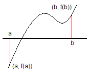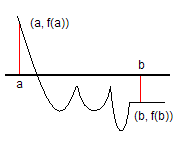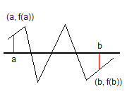
剛才只討論了f(a)和f(b)是一正一負的情形。如果f(a)和f(b)不是一正一負，而是同號──即f(a) * f(b) > 0，就表示座標(a, f(a))和座標(b, f(b))這兩點分別位在X軸的同一邊。區間[a,b]中有可能有根，也可能無根。
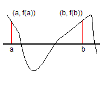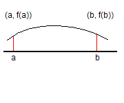
f(a)和f(b)也有可能是零。此時a和b就會是根。
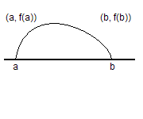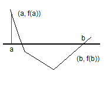
Bisection Method
Bisection Method就是反覆的使用勘根定理，反覆縮小區間，最後便可逼近一個根的值。Bisection Method縮小區間的方式，就像Binary Search一樣，將區間分成相等的兩半，然後選擇其中一個區間繼續找根。這裡舉一個簡易的例子，請看圖。
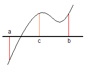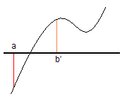
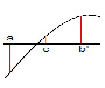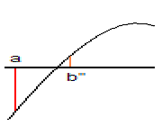
將區間分成兩段，然後判斷根是在[a,c]中還是在[c,a]中，並選擇有根的那個區間繼續遞迴下去，趨近根的正確值。選擇區間時，依據勘根定理的精神──一正一負之間必有根，就可判斷出要將a移至c、或者將b移至c。
使用迴圈來實作的程式碼大致上是這樣的。
times可用來限制迴圈次數，另外也可以避免[a,b]之間沒有根而造成的無窮迴圈。
a b的值是可以互調的，所以不必擔心a b孰大孰小。
這段程式碼也可以改寫成遞迴的形式，就像Binary Search同時可以有迴圈和遞迴的形式一樣。
這段程式碼使用了function pointer的語法。把欲逼近的f(x)當作參數傳進去執行，這麼一來Bisection Method就比較像是個函式的感覺了吧！
其他例子的討論
當區間[a,b]內有多個根的時候，大家的心中還是會熱切的希望自己的程式至少也能找出一個根，而不會連一個都找不到。
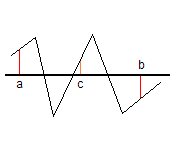
以這個例子來說，可以發現[a,c]有根，[c,b]亦有根。在找出一個根的前提下，可以選擇一正一負的區間[c,b]，因為它一定包含至少一個根。如果兩個都是一正一負的區間，可以修改一下程式，將兩邊的根都找出來。
還有另一種可能的情形是這樣的：
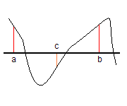
如果[a,b]是在同邊的話，還是可以嘗試將區段一分為二。運氣好的話，或許可以找到其中一個區間是一正一負，也或許兩個區間都是一正一負，這時候就可以用剛才敘述的方法來分析它了；如果運氣不好，兩個區間都是同邊，那也只好找其中一個區間遞迴下去了──堅持要讓兩個區間都遞迴下去的話，會讓時間複雜度變成非線性的，反而變成一個很慢的演算法了。
再來，如果區間一直都在同邊的話，就可能是沒有根的情形了：
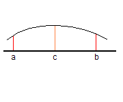
這個時候必須讓程式能夠提早結束。有一個簡單的方法就是限制遞迴的次數，這在剛才的程式碼敘述中就有提到了。
Bisection Method很明顯的一次只能處理一個根，就和Binary Search一樣，一次也只能找一個數字。這是這一類演算法的極限了。如果要保證一定要找得到根，那麼一開始的f(a)和f(b)就必須是一正一負。
實際應用時的意外狀況和應對方法
如果[a,b]之內不只有一個根，那麼Bisection Method也只能找到其中的一個根，而不能找到所有的根。要解決這個問題，可以把[a,b]細分成許多更小的區段，直到小區段只包含一個根，接著分別對這些小區段執行Bisection Method，就可以找出所有的根了。
如果[a,b]的端點恰好沒有定義在f(x)當中，則無法計算出f(a)、f(b)的值。要解決這個問題，可以將區間略略縮小一些，像是[a + 0.0001, b - 0.0001]，即可避免端點沒有定義的情況。
精確度
在Bisection Method當中，分割區段的次數重複越多次，便可以越精確。
儲存小數的float、double這些資料型態，其能儲存的位數有限，不可能精確，會有一個極限在。而Bisection Method可以到達該極限。假設一個float變數的範圍為10^38到10^-38，也就是說，分割區段log₂(10^76) ≒ 252次，一定能計算出float變數所能儲存的最精確的數值。
根據筆者測試，不管迴圈計算多少遍，a b的大小關係永遠不變，而c永遠會在[a,b]當中，不會超出範圍。
迴圈不斷計算之後，有些函數造成a b最終相等，也有些函數造成a b永遠不相等，永遠相差一個最小精確度的值。要解決不相等的問題，只需判斷c是a或是b即可。
UVa 10263 10341 10398 10428 10566 10668
範例：求平方根